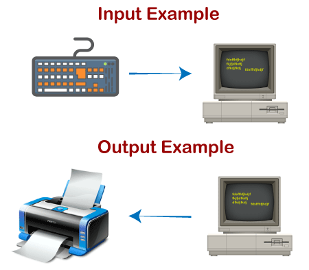
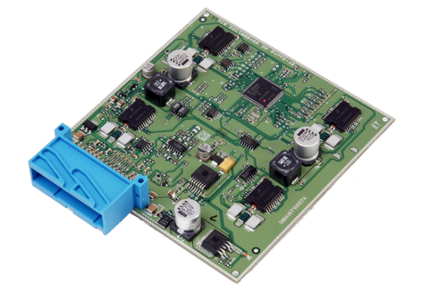
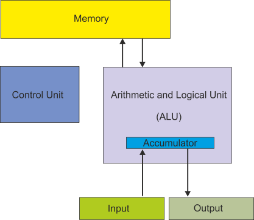

A central processing unit (CPU), also called a central processor, main processor or just processor, is the electronic circuitry that executes instructions comprising a computer program. The CPU performs basic arithmetic, logic, controlling, and input/output (I/O) operations specified by the instructions in the program.
The control unit (CU) is a component of a computer's central processing unit (CPU) that directs the operation of the processor.Most computer resources are managed by the CU. It directs the flow of data between the CPU and the other devices.

Memory is a device or system that is used to store information for immediate use in a computer or related
computer hardware and digital electronic devices.
In computer: Central processing unit. It is composed of an arithmetic-logic unit (ALU) and control circuits. The ALU carries out basic arithmetic and logic operations, and the control section determines the sequence of operations, including branch instructions that transfer control from one part of a program to another .
An input device is something you connect to a computer that sends information into the computer. An output device is something you connect to a computer that has information sent to it.